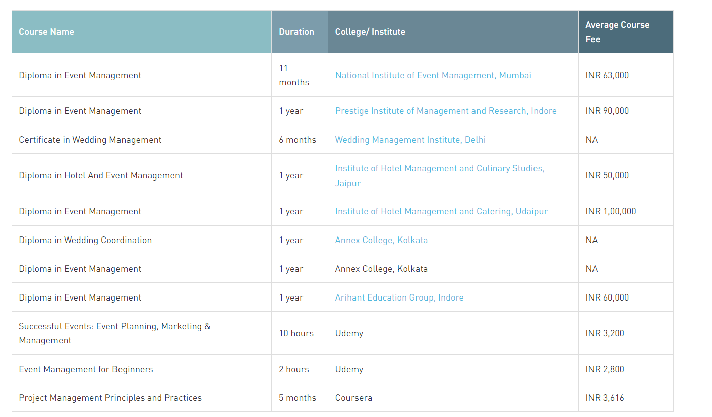
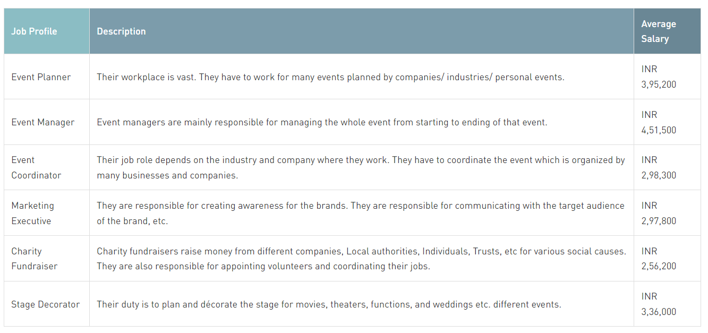

Do you enjoy going to events? When you go to a party or a wedding, do you always think about how the event could be improved? What if the decoration looked like this, the food tasted like this, and the timing of this programme was more convenient? Can you make a living by organising events? Read this article to learn more about a career in event management after 10th.
Event Management is the process of planning and organising large-scale events such as festivals, conferences, weddings, etc. It is a career path that requires essential skills and the ability to manage challenging tasks that can concur at any point in an event. This field encompasses the planning, execution, and organisation of any event, not only for informal events such as weddings, baby showers, birthday parties, and proposal ceremonies, but also for formal events such as award functions, live events for political parties, public speaking or motivational speaking, and entertainment industry-related events.
To succeed in Event Management after 10th, you must possess excellent communication skills, event planning skills, and be willing to work odd and long hours. Apart from handling props and arranging logistics, event management requires managing people. Let’s look at some of the diploma in event management after 10th and certificate in event management courses after 10th that students can pursue
The Following are the eligibility criteria to study event management courses after 10th:
The following are the list of different event management courses offered by the following colleges or institutes after 10th.
Studying event management includes identifying the brand's target audience, understanding the event concept, and coordinating the technical aspects before the event is launched. This diploma course in event management after 10th will help you learn the intricacies of event planning and let you become a part of the most dynamic industry. Its curriculum covers courses like Event Planning and Team Management, Principles of Event Management, Event Safety and Security, Basic Event Leadership and Communication, Event Accounting, Event Marketing and Advertising, etc.
The duration of the course is 1 year.
A student must have passed class 10th or equivalent from a recognized board.
The career options after the Event Management course can be Event Manager, Event Planner, Marketing Executive, Logistics Manager, etc.
Singhania University - Jaipur, Times & Trends Academy - Pune, Pacific University - Udaipur, etc.
Certificate courses for Event Management after 10th are short-term courses that can last for 2 months to 6 months depending on a college or institute that offers them. This certificate course introduces students with the nuances of the event management and planning industry. The course curriculum covers topics like Introduction to Events & Event industry, Introduction to Hospitality, Events Marketing, Logistics Management, Types of Events, Stages of Planning an event, Role of Branding, Introduction to Event Technical, Understanding venue operations, etc.
The duration of the course is 2 months to 6 months depending on the college or institute.
A student must have passed class 10th or equivalent from a recognized board.
After pursuing event management after 10th you can be employed as Stage Decorator, Wedding Planner, Exhibition Organiser, Event Accounts Manager, etc.
Apart from Diploma and Certificate courses, students can pursue short-term courses in Event Management after 10th through online platforms for a very low course fee. The duration of the course can vary from 36 hours to 3 months. Some of the online platforms are:
A career as an event manager is full of opportunities because get-togethers and events are a great way for people to come together and socialise. Event management courses after 10th including both diploma and certificate courses are definitely a good start for students who are interested in this field.
You may have got an idea on the course Event Management. The course is for 1 year.
Event Management is a good and career oriented management program. And hence, it requires some key skills. The Key skills would be necessary for the aspirants as it would help them land proper jobs and help them in their work life.
Candidates after completion of the event management can land into various lucrative job profiles.The salary of the some of the job profiles in Event Management after 10th are:
